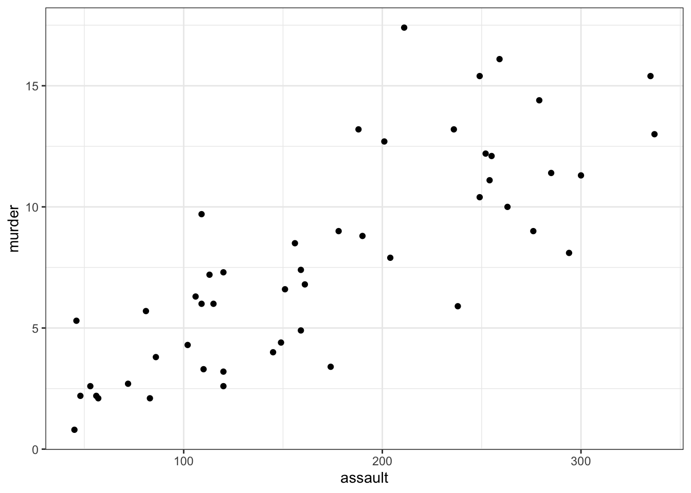
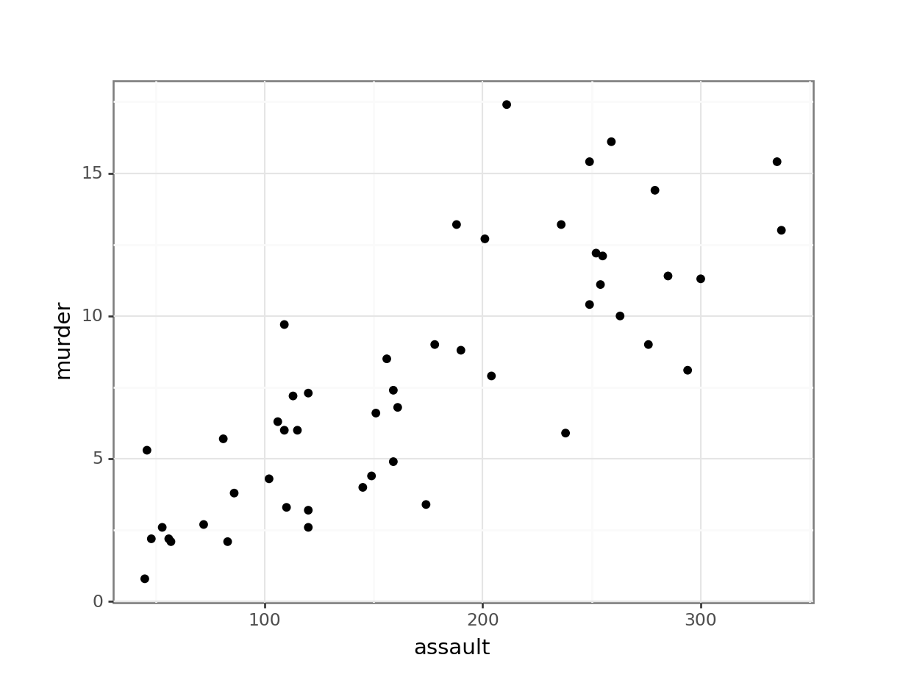
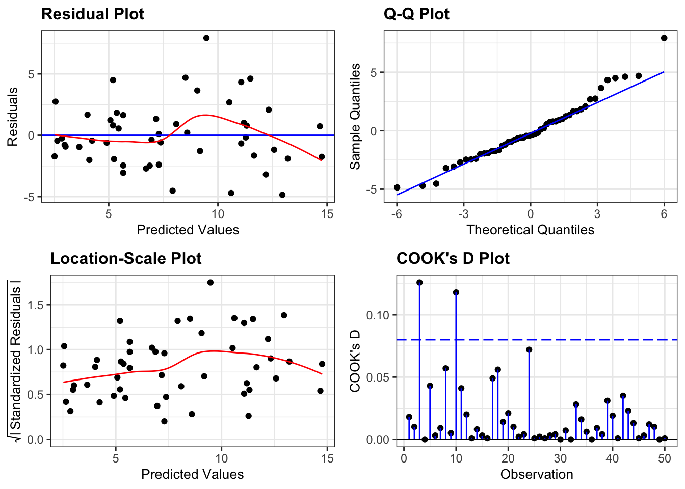
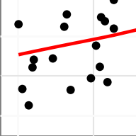
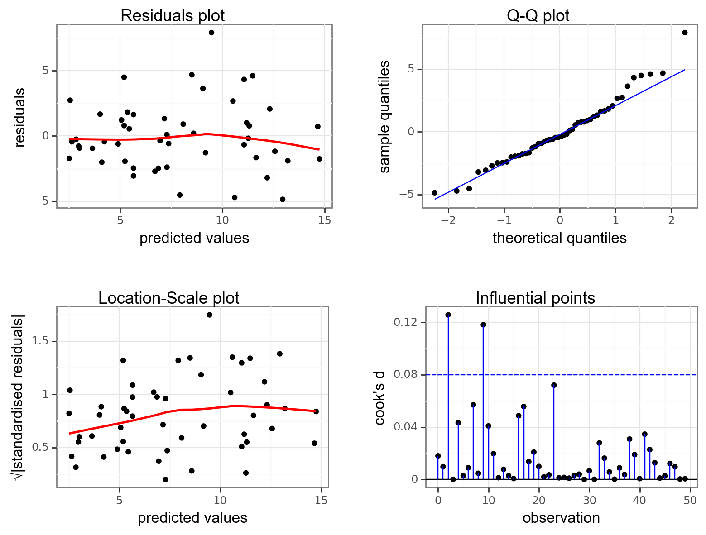
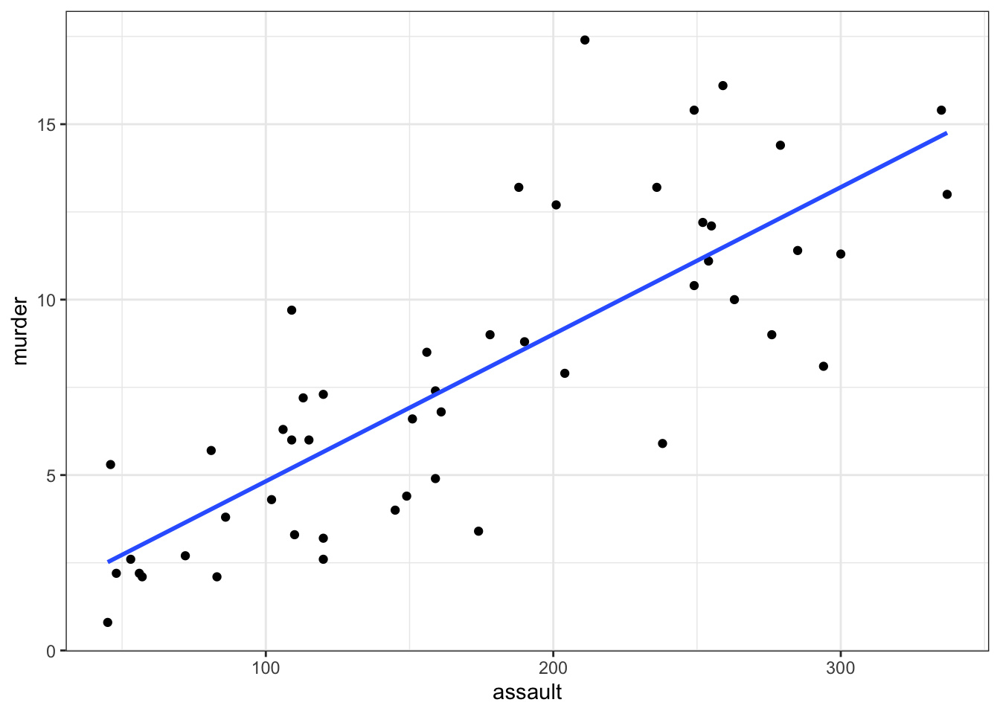
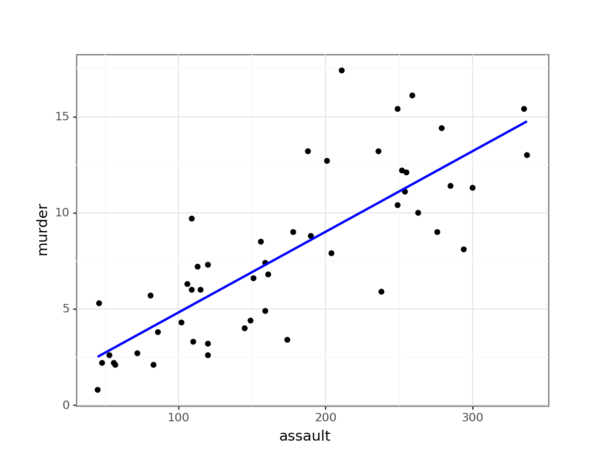

# A collection of R packages designed for data science
library(tidyverse)
# Converts stats functions to a tidyverse-friendly format
library(rstatix)
# Creates diagnostic plots using ggplot2
library(ggResidpanel)6 Linear regression
Learning outcomes
Questions
- When should I use a linear regression?
- How do I interpret the results?
Objectives
- Be able to perform a linear regression in R or Python
- Use ANOVA to check if the slope of the regression differs from zero
- Understand the underlying assumptions for linear regression analysis
- Use diagnostic plots to check these assumptions
6.1 Libraries and functions
Click to expand
6.1.1 Libraries
6.1.2 Functions
# Creates diagnostic plots
ggResidpanel::resid_panel()
# Creates a linear model
stats::lm()
# Creates an ANOVA table for a linear model
stats::anova()6.1.3 Libraries
# A Python data analysis and manipulation tool
import pandas as pd
# Simple yet exhaustive stats functions.
import pingouin as pg
# Python equivalent of `ggplot2`
from plotnine import *
# Statistical models, conducting tests and statistical data exploration
import statsmodels.api as sm
# Convenience interface for specifying models using formula strings and DataFrames
import statsmodels.formula.api as smf6.1.4 Functions
# Summary statistics
pandas.DataFrame.describe()
# Plots the first few rows of a DataFrame
pandas.DataFrame.head()
# Query the columns of a DataFrame with a boolean expression
pandas.DataFrame.query()
# Reads in a .csv file
pandas.read_csv()
# Creates a model from a formula and data frame
statsmodels.formula.api.ols()
# Creates an ANOVA table for one or more fitted linear models
statsmodels.stats.anova.anova_lm()6.2 Purpose and aim
Regression analysis not only tests for an association between two or more variables, but also allows you to investigate quantitatively the nature of any relationship which is present. This can help you determine if one variable may be used to predict values of another. Simple linear regression essentially models the dependence of a scalar dependent variable (\(y\)) on an independent (or explanatory) variable (\(x\)) according to the relationship:
\[\begin{equation*} y = \beta_0 + \beta_1 x \end{equation*}\]where \(\beta_0\) is the value of the intercept and \(\beta_1\) is the slope of the fitted line. A linear regression analysis assesses if the coefficient of the slope, \(\beta_1\), is actually different from zero. If it is different from zero then we can say that \(x\) has a significant effect on \(y\) (since changing \(x\) leads to a predicted change in \(y\)). If it isn’t significantly different from zero, then we say that there isn’t sufficient evidence of such a relationship. To assess whether the slope is significantly different from zero we first need to calculate the values of \(\beta_0\) and \(\beta_1\).
6.3 Data and hypotheses
We will perform a simple linear regression analysis on the two variables murder and assault from the USArrests data set. This rather bleak data set contains statistics on arrests per 100,000 residents for assault, murder and robbery in each of the 50 US states in 1973, alongside the proportion of the population who lived in urban areas at that time. We wish to determine whether the assault variable is a significant predictor of the murder variable. This means that we will need to find the coefficients \(\beta_0\) and \(\beta_1\) that best fit the following macabre equation:
And then will be testing the following null and alternative hypotheses:
- \(H_0\):
assaultis not a significant predictor ofmurder, \(\beta_1 = 0\) - \(H_1\):
assaultis a significant predictor ofmurder, \(\beta_1 \neq 0\)
6.4 Summarise and visualise
First, we read in the data:
USArrests <- read_csv("data/CS3-usarrests.csv")You can visualise the data with:
# create scatterplot of the data
ggplot(USArrests,
aes(x = assault, y = murder)) +
geom_point()
First, we read in the data:
USArrests_py = pd.read_csv("data/CS3-usarrests.csv")You can visualise the data with:
# create scatterplot of the data
(ggplot(USArrests_py,
aes(x = "assault",
y = "murder")) +
geom_point())
Perhaps unsurprisingly, there appears to be a relatively strong positive relationship between these two variables. Whilst there is a reasonable scatter of the points around any trend line, we would probably expect a significant result in this case.
6.5 Assumptions
In order for a linear regression analysis to be valid 4 key assumptions need to be met:
Important
- The data must be linear (it is entirely possible to calculate a straight line through data that is not straight - it doesn’t mean that you should!)
- The residuals must be normally distributed
- The residuals must not be correlated with their fitted values (i.e. they should be independent)
- The fit should not depend overly much on a single point (no point should have high leverage).
Whether these assumptions are met can easily be checked visually by producing four key diagnostic plots.
First we need to define the linear model:
lm_1 <- lm(murder ~ assault,
data = USArrests)- The first argument to
lmis a formula saying thatmurderdepends onassault. As we have seen before, the syntax is generallydependent variable~independent variable. - The second argument specifies which data to use.
Next, we can create diagnostic plots for the model:
resid_panel(lm_1,
plots = c("resid", "qq", "ls", "cookd"),
smoother = TRUE)
- The top left graph plots the Residuals plot. If the data are best explained by a straight line then there should be a uniform distribution of points above and below the horizontal blue line (and if there are sufficient points then the red line, which is a smoother line, should be on top of the blue line). This plot is pretty good.
- The top right graph shows the Q-Q plot which allows a visual inspection of normality. If the residuals are normally distributed, then the points should lie on the diagonal dotted line. This isn’t too bad but there is some slight snaking towards the upper end and there appears to be an outlier.
- The bottom left Location-scale graph allows us to investigate whether there is any correlation between the residuals and the predicted values and whether the variance of the residuals changes significantly. If not, then the red line should be horizontal. If there is any correlation or change in variance then the red line will not be horizontal. This plot is fine.
- The last graph shows the Cook’s distance and tests if any one point has an unnecessarily large effect on the fit. The important aspect here is to see if any points are larger than 0.5 (meaning you’d have to be careful) or 1.0 (meaning you’d definitely have to check if that point has an large effect on the model). If not, then no point has undue influence. This plot is good.
If you haven’t loaded statsmodels yet, run the following:
import statsmodels.api as sm
import statsmodels.formula.api as smfNext, we create a linear model and get the .fit():
# create a linear model
model = smf.ols(formula= "murder ~ assault", data = USArrests_py)
# and get the fitted parameters of the model
lm_USArrests_py = model.fit()Then we use dgplots() to create the diagnostic plots:
dgplots(lm_USArrests_py)

Note
Formally, if there is any concern after looking at the diagnostic plots then a linear regression is not valid. However, disappointingly, very few people ever check whether the linear regression assumptions have been met before quoting the results.
Let’s change this through leading by example!
6.6 Implement and interpret test
We have already defined the linear model, so we can have a closer look at it:
# show the linear model
lm_1
Call:
lm(formula = murder ~ assault, data = USArrests)
Coefficients:
(Intercept) assault
0.63168 0.04191 The lm() function returns a linear model object which is essentially a list containing everything necessary to understand and analyse a linear model. However, if we just type the model name (as we have above) then it just prints to the screen the actual coefficients of the model i.e. the intercept and the slope of the line.
The linear model object: would you like to know more?
If you wanted to know more about the lm object we created, then type in:
View(lm_1)This shows a list (a type of object in R), containing all of the information associated with the linear model. The most relevant ones at the moment are:
coefficientscontains the values of the coefficients we found earlier.residualscontains the residual associated for each individual data point.fitted.valuescontains the values that the linear model predicts for each individual data point.
print(lm_USArrests_py.summary()) OLS Regression Results
==============================================================================
Dep. Variable: murder R-squared: 0.643
Model: OLS Adj. R-squared: 0.636
Method: Least Squares F-statistic: 86.45
Date: Thu, 25 Jan 2024 Prob (F-statistic): 2.60e-12
Time: 08:33:13 Log-Likelihood: -118.26
No. Observations: 50 AIC: 240.5
Df Residuals: 48 BIC: 244.4
Df Model: 1
Covariance Type: nonrobust
==============================================================================
coef std err t P>|t| [0.025 0.975]
------------------------------------------------------------------------------
Intercept 0.6317 0.855 0.739 0.464 -1.087 2.350
assault 0.0419 0.005 9.298 0.000 0.033 0.051
==============================================================================
Omnibus: 4.799 Durbin-Watson: 1.796
Prob(Omnibus): 0.091 Jarque-Bera (JB): 3.673
Skew: 0.598 Prob(JB): 0.159
Kurtosis: 3.576 Cond. No. 436.
==============================================================================
Notes:
[1] Standard Errors assume that the covariance matrix of the errors is correctly specified.A rather large table, but the values we’re interested in can be found more or less in the middle. We are after the coef values, where the intercept is 0.6317 and the slope is 0.0419.
So here we have found that the line of best fit is given by:
\[\begin{equation*} Murder = 0.63 + 0.042 \times Assault \end{equation*}\]Next we can assess whether the slope is significantly different from zero:
anova(lm_1)Analysis of Variance Table
Response: murder
Df Sum Sq Mean Sq F value Pr(>F)
assault 1 597.70 597.70 86.454 2.596e-12 ***
Residuals 48 331.85 6.91
---
Signif. codes: 0 '***' 0.001 '**' 0.01 '*' 0.05 '.' 0.1 ' ' 1Here, we again use the anova() command to assess significance. This shouldn’t be too surprising at this stage if the introductory lectures made any sense. From a mathematical perspective, one-way ANOVA and simple linear regression are exactly the same as each other and it makes sense that we should use the same command to analyse them in R.
This is exactly the same format as the table we saw for one-way ANOVA:
- The 1st line just tells you the that this is an ANOVA test
- The 2nd line tells you what the response variable is (in this case
Murder) - The 3rd, 4th and 5th lines are an ANOVA table which contain some useful values:
- The
Dfcolumn contains the degrees of freedom values on each row, 1 and 48 - The
Fvalue column contains the F statistic, 86.454 - The p-value is 2.596e-12 and is the number directly under the
Pr(>F)on the 4th line. - The other values in the table (in the
Sum SqandMean Sq) column are used to calculate the F statistic itself and we don’t need to know these.
- The
We can perform an ANOVA on the lm_USArrests_py object using the anova_lm() function from the statsmodels package.
sm.stats.anova_lm(lm_USArrests_py, typ = 2) sum_sq df F PR(>F)
assault 597.703202 1.0 86.454086 2.595761e-12
Residual 331.849598 48.0 NaN NaNAgain, the p-value is what we’re most interested in here and shows us the probability of getting data such as ours if the null hypothesis were actually true and the slope of the line were actually zero. Since the p-value is excruciatingly tiny we can reject our null hypothesis and state that:
A simple linear regression showed that the assault rate in US states was a significant predictor of the number of murders (p = 2.59x10-12).
6.6.1 Plotting the regression line
It can be very helpful to plot the regression line with the original data to see how far the data are from the predicted linear values. We can do this as follows:
# plot the data
ggplot(USArrests,
aes(x = assault, y = murder)) +
geom_point() +
geom_smooth(method = "lm", se = FALSE)
- We plot all the data using
geom_point() - Next, we add the linear model using
geom_smooth(method = "lm"), hiding the confidence intervals (se = FALSE)
(ggplot(USArrests_py,
aes(x = "assault", y = "murder")) +
geom_point() +
geom_smooth(method = "lm",
se = False,
colour = "blue"))
6.7 Exercises
6.7.1 State data: Life expectancy and murder
6.8.1 State data: Graduation and frost days
6.10 Summary
Key points
- Linear regression tests if a linear relationship exists between two or more variables
- If so, we can use one variable to predict another
- A linear model has an intercept and slope and we test if the slope differs from zero
- We create linear models and perform an ANOVA to assess the slope coefficient
- We can only use a linear regression if these four assumptions are met:
- The data are linear
- Residuals are normally distributed
- Residuals are not correlated with their fitted values
- No single point should have a large influence on the linear model
- We can use diagnostic plots to evaluate these assumptions